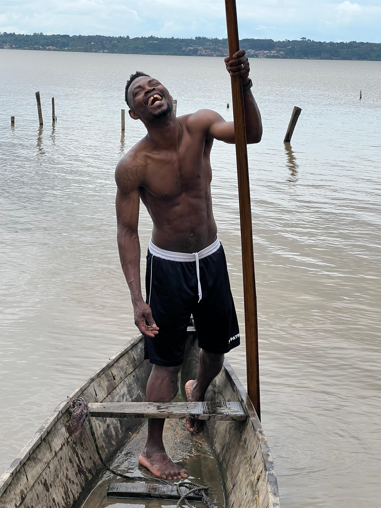

Bienvenue à
Possotomè
Une localité vivante sur les rives du lac Ahémé, où se rencontrent des traditions anciennes, des communautés chaleureuses et les bienfaits de la nature.
À propos de Possotomè
Une localité façonnée par le lac et ses habitants
Nichée sur les rives du lac Ahémé, dans le sud du Bénin, Possotomè est l'un des trésors cachés du pays. Connue bien au-delà de ses frontières pour ses sources thermales naturelles, elle abrite une riche mosaïque d'ethnies, de traditions et de scènes de vie quotidienne que peu de visiteurs ont eu le privilège de découvrir.
Ici, le lac n'est pas seulement un paysage, c'est un mode de vie. Les pêcheurs partent avant l'aube, les enfants jouent au bord de l'eau, et les anciens se retrouvent sous les manguiers pour transmettre les histoires qui soudent la communauté.
Explorer la vie à Possotomè
Un aperçu de Possotomè
Vie, culture et découverte
Trois fenêtres sur ce qui rend Possotomè unique, racontées par quelqu'un qui y a grandi.
« Possotomè ne m'a pas fait par hasard tel que je suis, elle m'a façonné par son lac, ses habitants et ses histoires. Ce site est ma façon de dire merci. »Djahou Oke, né et grandi à Possotomè
Où se trouve Possotomè ?
Posée sur les rives paisibles du lac Ahémé, dans le sud du Bénin, Possotomè est une destination culturelle et historique connue pour sa source thermale, ses riches traditions et sa vie communautaire animée. Située dans la commune de Bopa, département du Mono, elle est formée d'un réseau de villages unis par une identité culturelle commune, des traditions ancestrales et des liens communautaires forts.
Possotomè — Commune de Bopa, département du Mono, République du Bénin